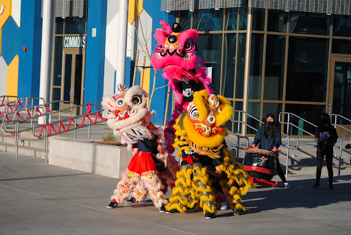
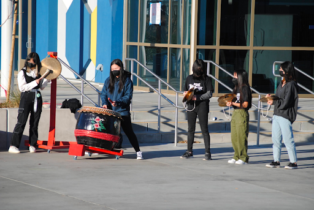
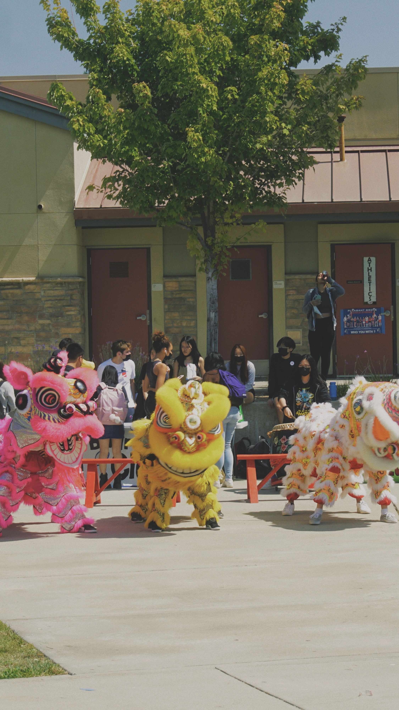
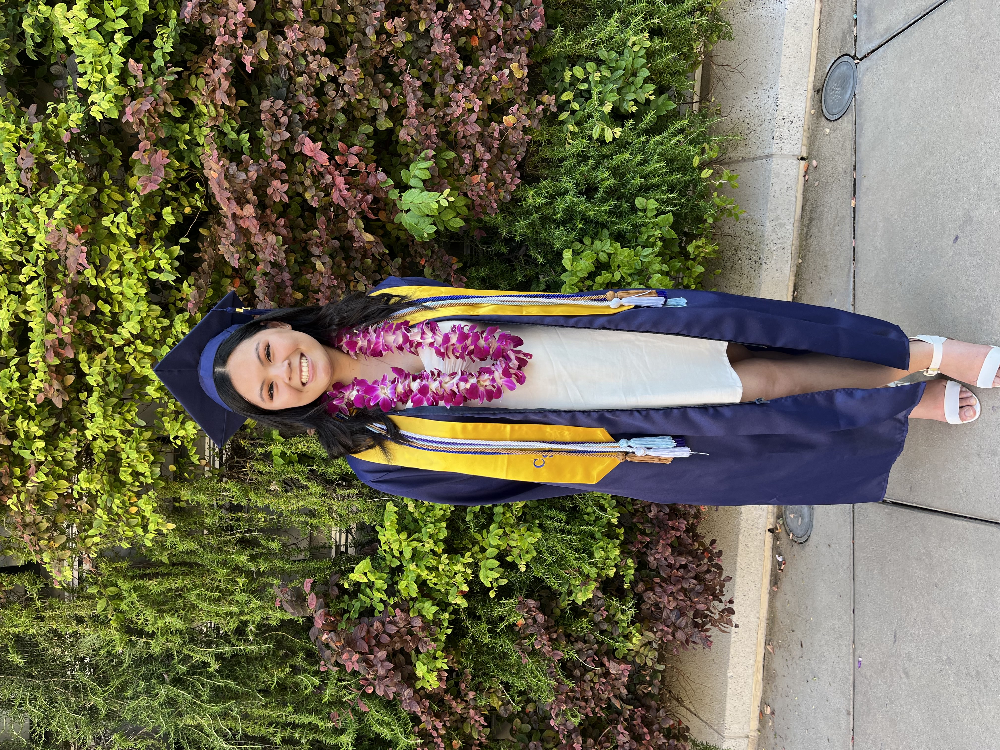
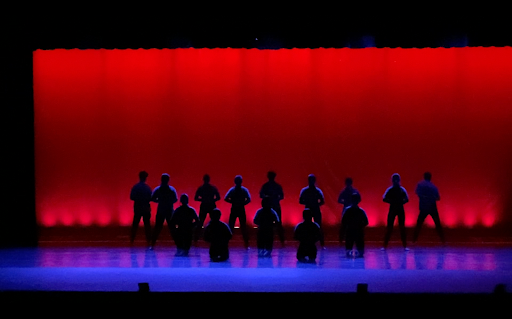

Jasmine Ma
The qualities and skills acquired within my high school career set a base for the choice on where to go next. I always knew 4-year college would be my next step. I made the choice to apply to the University of California, Riverside (UCR) and am currently enrolled as a full time student. Because the school is located in a city, public, and large, UCR is the perfect environment for me to grow academically and socially (College Scorecard). My acquired skills of communication and self-awareness open up doors for new friendships and experiences. According to their website, UC Riverside has around 594 student organizations available for me to join. With groups such as “Chinese Student Association” as well as “Vietnamese Student Association,” I remain confident with my decision to move for college. Though UCR may not be the most prestigious, they are one of the nation's top 30 public universities (Forbes "America's Best Value Colleges”). The experiences accessible are prioritized over prestige when considering the factors of choosing a university to attend.
Honestly, consulting has always been something I had my mind set on since I heard about the career. It sounded like an ideal path for me as it is a job based on helping others improve and I am dedicated to doing my best for others as well. So, the second I found out about this organization at club rush, I knew it was an opportunity I could not pass up. HCG’s pillars and mission closely align with my personal values. Though I am a first year student with no consulting experience, I am determined to learn more about this potential future career of mine. Being a part of HCG’s intern team will allow me to grow more as a student and future employee in the business world. Looking back on it now, this career always intrigued me from the first time I heard about consulting. The idea of helping others by communicating through collaboration and sharing ideas sounds like the perfect fit. The skills of leadership, strategy, and patience are all common abilities that successful business leaders display. However, those with the born qualities of empathy, interest in business, and ambition that truly prosper in the field.
I have always been the kind of person who is dedicated to giving my best performance for others, as well as myself. Putting my best effort forward is an essential value of mine and it applies to all aspects of my life. Having this mindset allows me to showcase one of my best skills: communication. Spending time collaborating with others to gather information ensures clarity of what needs to be done, so as to execute the task with less misunderstandings. Currently, I am pursuing this career as an intern in Highlander Consulting Group. This organization specializes in different types of consulting and provides me the opportunity to learn more about the corporate world. I hope to concentrate in Business Analytics once in the official School of Business here at UCR.
Experience
Recreation Leader
• Balanced $800 of daily sales in credit, debit, and cash transactions to monitor profit margins for future expenditures
• Tracked inventory as supply arrived to reinforce accurate spending and maximize product organization
• Verbalized customer needs to team to create an efficient work environment
Restaurant Assistant Manager
• Collaborated with local organizations and marketed ads through social media for engagement to increase
sales by 20%
• Formulated an action plan and utilized personal selling to cater towards customers’ needs
• Upheld COVID-19 restaurant protocols of increased sanitization, mask enforcement, and distance
restrictions to ensure customer and employee wellness
Vice President
• Actively instructed varying skill levels how to play the traditional drum, cymbals, and gong used in Lion Dance performances
• Tracked and submitted paperwork needed to run club activities throughout the year
• Coordinated and inspired a variety of fundraisers to increase club funds by $500
Education
UC Riverside
Pleasant Grove High School
Portfolio




